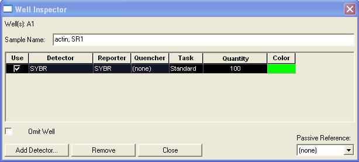

The well label provides both the sample and amplicon names, which must be separated by a comma. If a comma is not present, the program sets the amplicon name to “none” and the amplicon size to zero.
If calibration reactions are present, set the “Task” for each of these wells to “Standard” and enter the quantity of lambda DNA in picograms (this is generally 100 pg).
In the well shown below, "actin" is the amplicon and "SR1" is the sample. For illustration the well has been designated as a "standard" containing 100 pg of lambda gDNA. Note that calibration profiles are stored in the Calibration database. Note also if a Calibration database is not open, the calibration profiles will not be imported.

Export the well information using the “File-Export-Results” function located in the File menu. This generates an Excel .csv file. Open this file, and save it as a .xls file using the “File-Save as...” in the File menu.
Manually enter the run date located in the B8 cell (this is necessary because the exported date is incorrectly formatted). This can be done by typing in a short form, e.g. "5sep9", and pressing enter. An error will occur if the Run date cannot be imported.
Insert an empty worksheet (Insert-Worksheet on the menu bar). This worksheet will be used to import the Fc datasets.
Return to the SDS program and export the deltaRn located under the "File-Export-Delta Rn” in the File menu, and select OK to overwrite the first .csv file.
Open this new .csv file. Copy all of the cells to Clipboard (Ctrl A, Ctrl C). Move back to the first workbook, select cell A1 in the empty worksheet and paste in the copied cells (Ctrl V).
This should have generated the Delta Rn in the first worksheet and the well information in the second worksheet.
Finish by saving the file. The Excel file is now ready for data import.
To initiate Run import, go to the Import menu and select "AB 7500 Ver 1", which will open the file selection dialog. Select the Excel workbook file and press "Open".